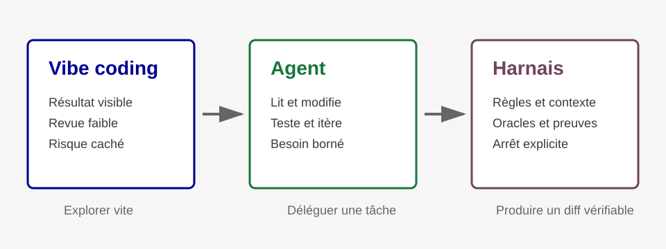

Du code généré au système contrôlé
Le sujet n'est pas seulement d'aller plus vite. Le sujet est de savoir quand déléguer, quoi vérifier et où replacer l'humain.
Le vibe coding produit vite une forme visible, mais il devient risqué quand le code n'est pas relu, testé ou replacé dans l'architecture.
Un agent va plus loin : il peut modifier, tester et itérer. Sans harnais, il reste pourtant guidé par un objectif trop vague ou par le contexte qu'il devine.
Le harnais agentique ajoute les règles, les outils, les preuves et les limites qui rendent la délégation exploitable.
Prototype local sans revendication de conformité
Cette page utilise les assets DSFR locaux et le mode neutre. Le bloc marque République française reste hors périmètre sans droit d'usage établi.
Lire les limites de preuveSchéma de lecture

Comparer les trois niveaux
Usage rapide orienté résultat visible. Il peut être utile pour un prototype, un script jetable ou une exploration à faible enjeu.
Le risque apparaît quand le comportement observé remplace la revue : dette invisible, sécurité oubliée, intégration fragile.
- Bon usage : explorer vite.
- Limite : ne pas confondre démonstration et production.
L'agent agit dans un environnement : il lit, modifie, lance des commandes et revient avec un diff ou un livrable.
Sans bornage, il peut optimiser ce qui est facile à changer plutôt que ce qui est réellement utile.
- Bon usage : déléguer une tâche bornée.
- Limite : l'objectif, les droits et les preuves doivent être explicites.
Le harnais transforme la délégation en processus contrôlé : contexte vivant, règles, oracles, checks, mémoire et condition d'arrêt.
La valeur n'est pas dans le volume de code généré, mais dans la capacité à produire un diff utile et vérifiable.
- Bon usage : changement risqué, multi-fichiers ou difficile à relire.
- Limite : le harnais coûte trop cher pour un micro-diff trivial relu à la main.
Ce que le harnais ajoute
Contexte
Le dépôt, les règles locales, les sources de vérité et les zones sensibles sont chargés au bon moment.
Outils
L'agent peut lire, modifier, générer, tester et revenir avec une preuve observable.
Oracles
Les checks et régressions disent ce qui doit rester vrai, y compris les cas rouges avant verts.
Arrêt
La tâche se termine sur un critère explicite, pas sur une impression de fluidité.
Choisir le bon niveau d'autonomie
Prototype jetable
Le vibe coding peut suffire si le périmètre est faible, temporaire et relu avant réutilisation.
Tâche bornée
Un agent est adapté quand le résultat attendu, les fichiers autorisés et la preuve de fin sont nommés.
Zone à risque
Le harnais devient rentable quand les gates évitent une dérive, une fausse preuve ou un diff cosmétique.
Points de vigilance
Produire plus vite ne garantit pas que l'équipe, le client ou l'architecture absorbent plus de changements utiles.
Les métriques doivent regarder la qualité livrée, la réduction des bugs, la maintenabilité et la satisfaction des équipes.
Un harnais trop lourd peut coûter plus cher que le problème. Il doit être réservé aux tâches où le bornage et les preuves changent vraiment le résultat.
L'agent peut mécaniser une partie de la revue, mais l'humain décide quand une question touche l'architecture, le métier, la sécurité ou la publication.
Preuves locales de cette page
La preuve attendue porte sur la génération et les invariants locaux, pas sur une conformité globale.
Le JSON est validé par le schéma publié, la page est générée par le builder assemblé, les ancres locales sont résolues et le SVG local n'utilise pas de ratio.
La sortie ne contient pas de CDN DSFR grâce à assets_prefix réglé sur assets/dsfr.
Ce qui reste à vérifier avant un usage réel : contenu métier, droit d'usage éventuel du bloc marque, revue DSFR ciblée, accessibilité et comportement navigateur complet.